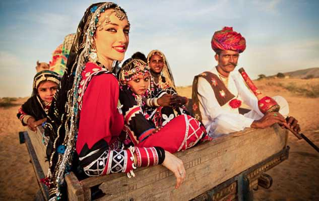
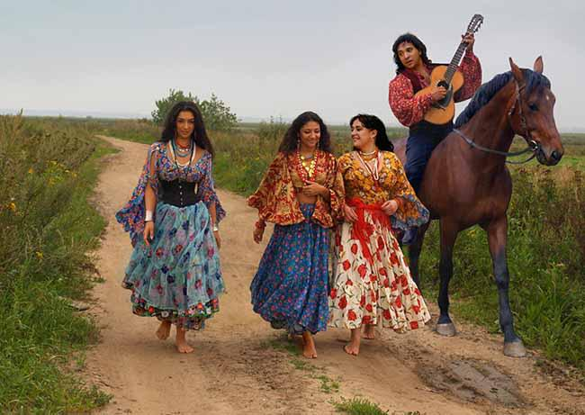
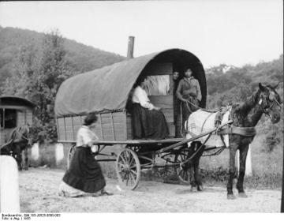
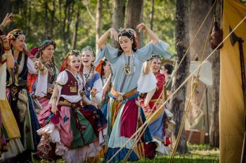

الغجر

تنقسم شعوب الغجر أو شعب الرّوما بشكل أساسي إلى الرومن (في أوروبا) والنوار والكاولية والدومر (في الشرق الأوسط)،
بعضهم يتكلم لغة مشتركة قد تكون من أصل هندي، وبعضهم لهم ثقافة وتقاليد متشابهة، وحتى أواخر القرن العشرين ظلت
شعوب الغجر تعيش حياة
التنقل والترحال، وللغجر أسماء مختلفة باختلاف اللغات والأماكن التي يتواجدون فيها، وهم من بين الشعوب التي تعرضت
للاضطهاد من قبل الحكم النازي. وحددت الأمم المتحدة والاتحاد الأوروبي في العام 1992 اليوم العالمي للغجر في الـ 8
من أبريل من كل
عام،وذلك للتذكير بمعاناة الغجر حول العالم، وما يواجهونه من تمييز واضطهاد، إلى جانب التعريف بثقافتهم والاحتفاء
بها.
أصل الغجر
توجد آراء مختلفة بشأن تاريخ الغجر وأصولهم، منها أن هؤلاء الأقوام أصلا من شعوب الهند وإيران ومناطق وسط وجنوب
آسيا، هاجروا من أراضيهم في حوالي القرن الرابع الميلادي، وأوضح بعض المؤرخين أنهم في أواسط القرن الخامس عشر
(1440م تقريبا) وصلوا إلى
مناطق المجر وصربيا وباقي بلاد البلقان الأخرى، ثم بعد ذلك انتشروا في بولندا وروسيا، واستمر انتشارهم إلى أن
بلغوا السويد وإنجلترا في القرن السادس عشر الميلادي، كما استوطنوا في إسبانيا بأعداد كبيرة.
عادات وتقاليد الغجر

مهن متوارثة : كان الغجر يمتهنون التقاط الطعام والصيد إضافة إلى خبرتهم في الحيوانات والمعرفة التقليدية بطب
الأعشاب. كما يشتهر الغجر في الدول الأوروبية بأعمال السرقة والاحتيال والتي غالبا ما تتسبب باضطهادهم من قبل
الشعوب الأخرى.في السابق
كان يمكن تمييز الغجر سهلاً بسبب أنماط لبسهم الغريبة، ولغتهم الخاصة، فقد كان النساء يلبسن الملابس الفضفاضة
المزركشة، ويتخذن زينة من الحلي المختلفة بشكل كثيف ولافت، ويضعن على آذانهن حلقات كبيرة من الفضة تنعكس عليها
أشعة الشمس مكونة بريقا
يضفي على الغجرية مسحة جمالية خاصة، مع تزيين الوجه وإسبال الشعر الأسود على جانبيه، أما الرجال فيلبسون الملابس
المبهرجة متعددة الألوان إضافة إلى وضع لفافة حول الرقبة.

خيمة وعربة وحصان: كان الغجر في الماضي يستخدمون العربات التي تجرها الخيول والبغال والحمير، ولكن تحت وطأة الضغوط
الاقتصادية واكتشاف المحركات التي تعمل بواسطة البترول تركوا مركباتهم تلك، فقط 6% من الغجر الآن يعيشون على
العربات من النمط
القديم، غالبا ما يعيش الغجر في الخيام، أو على ظهور عرباتهم (ربما أصبح ذلك من الماضي)، ومن عاداتهم تزيينها
برسومات مختلفة، ولتلك المناسبة أسطورة تحكي أن أحد الغجر قد هام حبا بفتاة، وعند زواجه بها طلبت منه أن يزين لها
بيت الزوجية، وقد
استجاب الفتى لذلك، ووضع كل ما أمكنه من تصميمات فنية في تلك العربة، وتمضي القصة لتحكي أن الغجرية أصيبت بداء
عضال سبب وفاتها، الأمر الذي أحزن الفتى الغجري كثيرا، ثم قام برسم وجهين في عربته، الوجه لأول لرجل داكن البشرة
يمثله هو والآخر
لفتاة ذات شعر أحمر تمثل عروسه، وسار الناس على العادة وصاروا يزينون عرباتهم بنفس الطريقة، ويخصص الغجري ربع
مساحة العربة لزوجته مع إحداث فتحة في الأعلى للتمكن من إشعال النار بداخلها.
عادات الزواج: يتزوج الغجري بالغجرية في سن مبكرة جدا وذلك الزواج يتبع التقاليد الغجرية بصرامة من حيث طريقة
الاحتفال، ففي البدء يعطي الغجري البنت التي يختارها للزواج لفافة عنقه، وإذا ما ارتدت البنت تلك اللفافة فهذا
يعني أنها قبلت الزواج
به وإلا فلا، والطلاق نادر الحدوث بين الغجر. وهناك عادة قفز الزوجين للمكنسة، وعادة أخرى غريبة للزواج، وهي أن
يتصافح الزوجان ثم تكسر قطعة من الخبز وتسكب عليها قطرات من الدم من إبهاميهما، ثم يأكل كل واحد منهما القطعة التي
فيها دم الآخر،
ثم يكسر ما تبقى من قطعة الرغيف على رؤوسهما، وبعدها يغادران مكان الاحتفال، ولا يحضران إلا في اليوم التالي
للمشاركة في الغناء والرقص وبذلك يتم الزواج.
ثقافة الغجر

الموسيقى : عرف عن الغجر اتقان الرقص والموسيقى، ويشتهرون بتقديم الموسيقى في المنتزهات وفي العاب السيرك، كما
يملك الغجر إرث فني متأثر بموسيقى الشعوب التي جاوروها، وفي ذات الوقت يحمل صبغتهم الخاصة. فساهم غجر أوروبا في
ولادة موسيقى
ورقصة الفلامنكو، وفي الدول العربية وشمال أفريقيا عمل الغجر على الاستسقاء من الموسيقى البدوية وطوروها وساعدوا
في المحافظة عليها.
يتناقل الغجر إرثهم الموسيقي شفهيا، ويغلب على موسيقاهم الطابع الإرتجالي، وهي في الغالب أغان قصيرة، ذات طابع
حزين وإيقاع راقص، تقول الباحثة في تاريخ الغجر إيلينا بيتروفيتش:" إن الموسيقى هي روح الغجر الخلاقة التي يتغلبون
فيها على
أحزانهم"
الديانة : انقسم الغجر في دياناتهم حيث أصبح جزء منهم مسلمين كما في البوسنة والهرسك، بينما جزء آخر تبعوا مذهب
الأرثوذكس في صربيا والجبل الأسود، كما أصبح معظم الغجر في أوروبا الغربية رومان كاثوليك، ولكنهم حافظوا على كثير
من معتقداتهم
السابقة قبل اعتناقهم المسيحية .